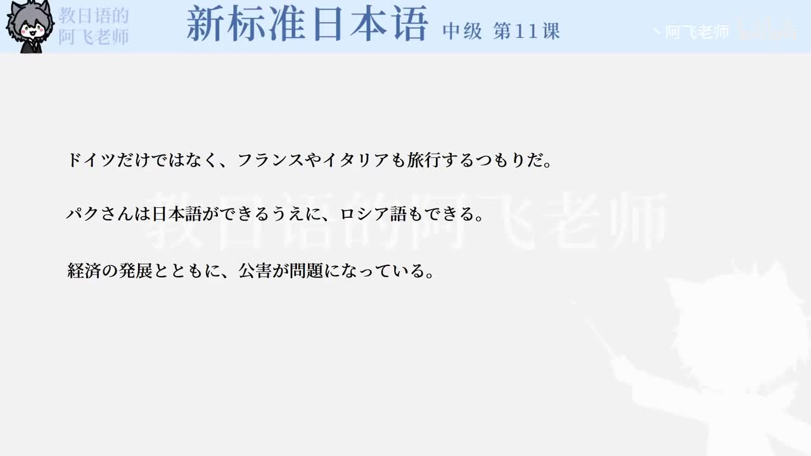

Bilibili P152 · Grammar 2
若者の意識：语法2
围绕旅行范围、语言能力和社会问题变化，学习“不只A，B也”、同方向累加以及“随着……”的说明文表达。
全篇听力精讲
按 3 个语法点轮播。每项会播放核心含义、接续、常见用法、易错提醒、日语例句、中文意思和断句。
这一讲的三个抓手
范围扩展「だけではなく、も」把对象从A扩到B。
同向累加「うえに」表示本来已经如此，而且还如此。
伴随变化「とともに」说明两个变化一起推进。
语法关系图
1 · 不止Aだけではなく
2 · B也も
3 · 而且还うえに
4 · 随着とともに
语法精讲
重点词汇与搭配
练习与复习
来源说明：视频标题、时长、CID 和首帧来自 Bilibili 公开视频接口；语法项目依据 P152 首帧可见例句整理。本页是学习笔记，不是视频逐字稿。